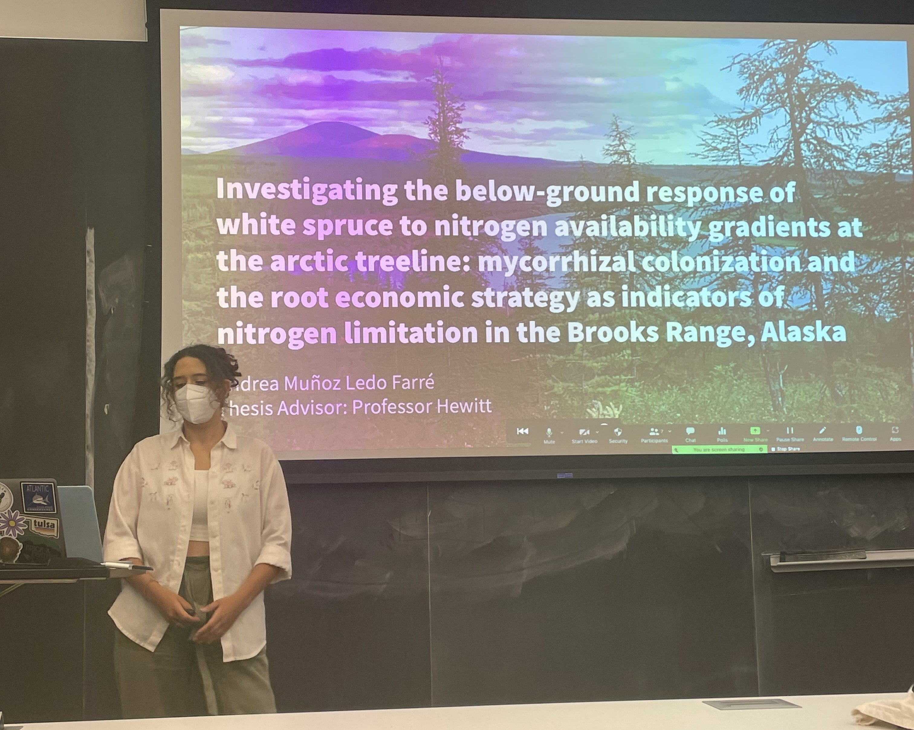

NUTRIENT AVAILABILITY AND ARCTIC TREELINE MIGRATION
This project, completed as part of my undergraduate thesis, investigated nitrogen limitation as a potential constraint on Arctic treeline migration in the Brooks Range in North-Eastern Alaska. The final product, an 80-page document, was comprised of two main components: an extensive, writing-focused introduction (a requirement for environmental studies theses), and a classic scientific paper. I began processing samples in the laboratory during the summer before my senior year (2021), and the project culminated in the submission of my thesis and a formal presentation in May 2022.
Abstract
Rapid climate warming in the Arctic over the last century has resulted in boreal forest advance into tundra, and thus latitudinal migration of arctic treelines. However, rates of treeline movement have not been uniform throughout the Arctic, with some treeline regions remaining stagnant and others retreating, despite steadily rising temperatures. Understanding the drivers of and limits to treeline migration is incredibly important given the implications for the carbon cycle and the Earth’s energy budget. This thesis explored the belowground response of white spruce trees to varying degrees of nitrogen limitation at the arctic treeline in the Brooks Range, Alaska. An earlier study of the study sites identified declining soil temperature and soil nutrient gradients from west to east. Here, I found greater mycorrhizal colonization of spruce fine roots at the most nitrogen-limited sites in the colder, easternmost region of the Range. I also observed significantly lower foliar δ15N values at those sites compared to foliar N isotopic signatures of trees at the westernmost watershed. Fine root trait analyses revealed a strong resource economic gradient in morphological root traits of spruce trees at the four watersheds. Interestingly, while there was no correlation between root economic strategy and soil nitrogen availability, I did identify a trend towards a relationship between mycorrhizal abundance and fine root morphology. Overall, my results show that white spruce at the treeline in the Brooks Range have complex responses to nutrient limitation that involve an interplay between mycorrhizal fungi and root morphology.
Takeaways
This research significantly enhanced my technical laboratory and statistical analysis skills. Over the course of the project, I manually processed 74 white spruce fine root samples and used the ecological software program WinRhizo for sample analysis. I was responsible for all aspects of data organization, processing, and analysis, which I conducted using Microsoft Excel and R Studio. The analysis process was extensive, involving meta-data organization, data exploration, and the development of various visualizations, such as Principal Component Analyses, scatterplots, and box plots. My work required over 1,000 hours of research, particularly because I was new to coding and using R Studio. The precision needed for techniques like the point-intersect method (for measuring mycorrhizal colonization) demanded a high level of attention to detail. Throughout this process, I worked independently, setting my own deadlines and regularly reporting to my thesis advisor, Dr. Rebecca Hewitt, and my thesis committee. The project not only exposed me to a wide range of laboratory procedures but also strengthened my scientific writing and presentation skills, providing invaluable experience in managing an independent research project from start to finish.
Photos and Hand-drawn Figures
FIG. 1. The nitrogen cycle. Inspired by diagram in Chapin et al. 2011. FIG. 2. Conceptual figure of Root Economic Spectrum and root economic strategies along a nitrogen availability gradient. Fine roots depicted include: Root Tissue Density (RTD), Specific Root Tip Abundance (SRTA), Specific Root Length (SRL), Specific Root Surface Area (SRSA), Average Diameter (AD). Diagram inspired by Spitzer et al. 2020. Photos 3, 4, & 5. Laboratory setup and root samples on grid-lined petri dish for mycorrhizal colonization analysis using the point-intersect method (Brudett et al. 1996). Amherst College, Massachusetts. Photo taken by Andrea Muñoz Ledo, samples collected by Patrick Sullivan from the Coleen watershed in the Brooks Range, Alaska in the summer of 2021. Photo 6. Fine root system and root tips. The ticker, coarser root segment at the top left is not colonized by ectomycorrhizal fungi. The root tips at the bottom right are colonized. Photo taken by Andrea Muñoz Ledo, samples collected by Patrick Sullivan from the Coleen watershed in the Brooks Range, Alaska in the summer of 2021. Photo 7. Image of root analysis using WinRhizo. Root length, number of forks, root projected area, root width, root average diameter, and length-per-volume were obtained using the software program on scanned root segments. Specific root length (ratio of length to mass of fine roots; m/g), root tissue density (ratio of length per volume; g/cm3), specific root tip abundance (ratio of tips per gram of dry mass; tips/g), and specific root surface area (ratio of surface area per gram of dry mass; cm2/g) were all calculated in Excel, using the measurements from WinRhizo and the dry root mass. Photo 8. Environmental studies thesis students post-presentation.